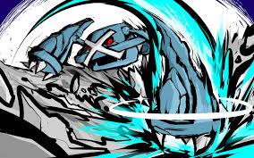

Sobre Mim
Olá! Meu nome é Miguel, tenho 15 anos e sou aluno do Colégio Sesc Senac. Gosto de aproveitar meu tempo aprendendo coisas novas, me divertindo com meus hobbies e compartilhando momentos com amigos e familiares. Sou uma pessoa curiosa, criativa e que valoriza o respeito e a amizade. Uma das minhas maiores paixões é o futebol. Além de assistir jogos, gosto de jogar com meus colegas, seja na escola ou nos fins de semana. O esporte me ensina sobre trabalho em equipe, disciplina e superação. A sensação de fazer um bom passe, marcar um gol ou simplesmente jogar por diversão é algo que me deixa muito feliz. Também sou muito fã de animes. Eles me encantam pelas histórias envolventes, personagens marcantes e pelas lições que transmitem. Animes como Naruto, One Piece e outros me inspiram a seguir em frente mesmo diante das dificuldades, acreditando sempre no meu potencial e nos meus sonhos. Outro interesse forte que tenho são os jogos eletrônicos. Gosto especialmente de jogos com boas histórias e personagens cativantes, como Pokémon e Undertale. Esses jogos não são só entretenimento para mim, mas também uma forma de aprender, refletir e até desenvolver meu raciocínio e criatividade. Acredito que cada pessoa tem algo único para oferecer ao mundo, e estou sempre em busca de me conhecer melhor, de aprender com os outros e de crescer tanto como estudante quanto como ser humano. No futuro, espero poder transformar meus interesses e paixões em uma carreira que me motive e me permita ajudar outras pessoas de alguma forma.
| Nome | |
|---|---|
| Miguel | miguelhmgomes@gmail.com |